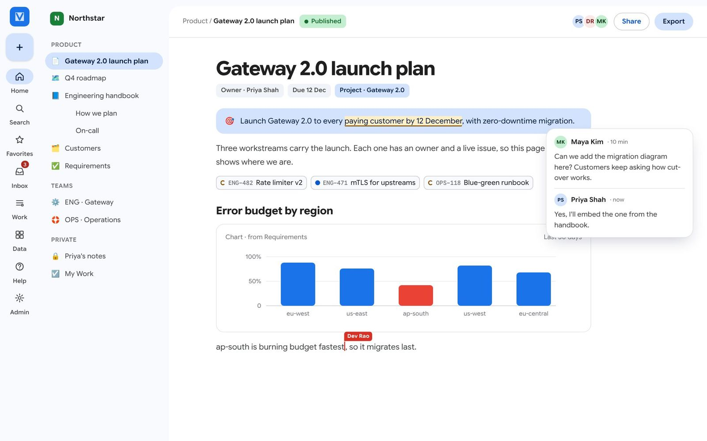
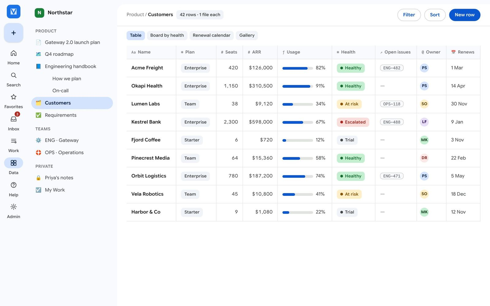
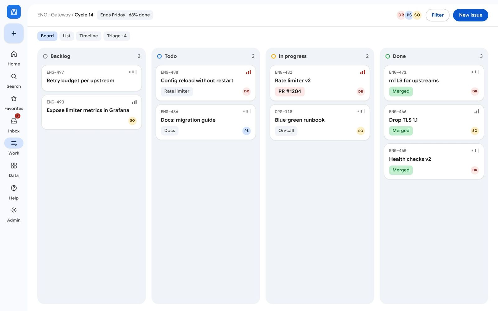
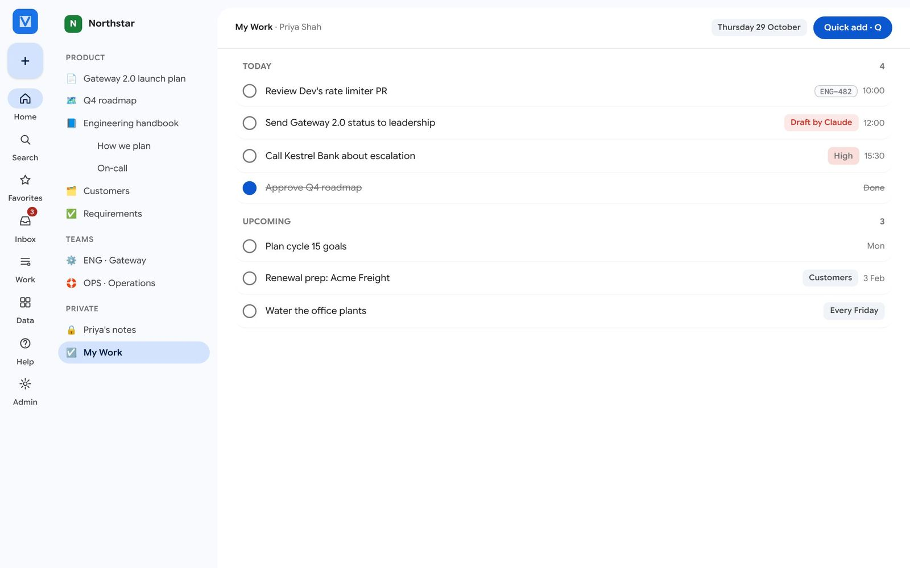
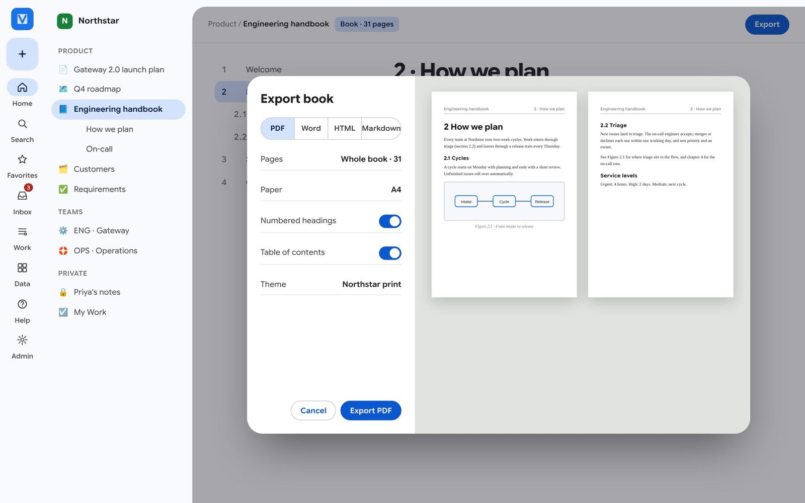
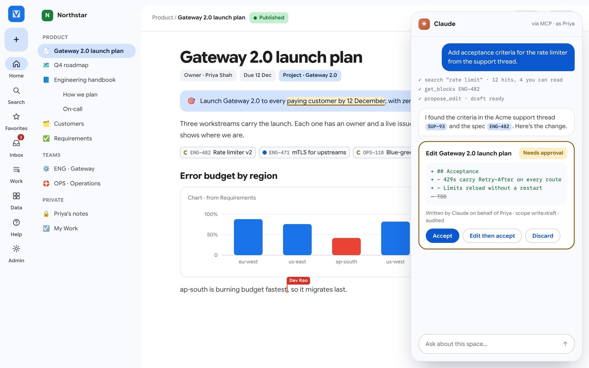
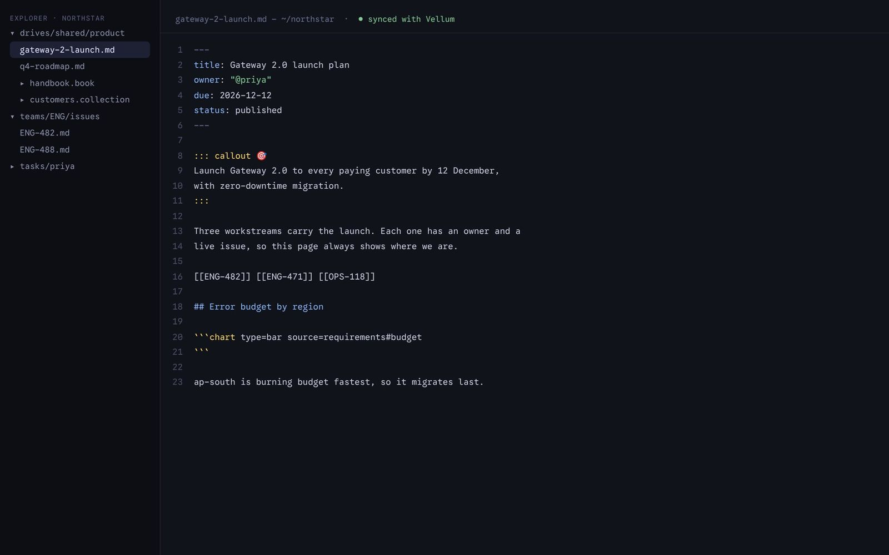
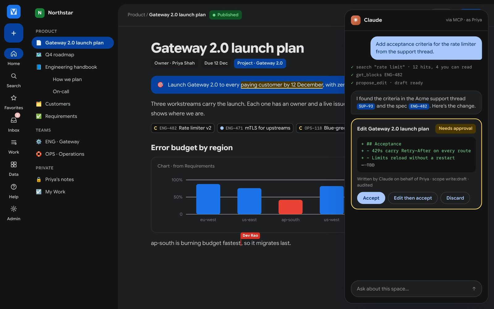

Docs, data and work in one app you own.
Vellum is a free, open-source workspace you run on your own computer or server. It does the jobs of Notion, Confluence, Jira, Linear and Google Docs in one app, keeps every page as a plain Markdown file you can open anywhere, and lets Claude help only when you approve.
- 0:00Write a page
- 0:06Insert a chart with /
- 0:10See the file on disk
- 0:15Approve Claude's edit
- 0:21An issue closes itself
Read the tour as text
- Priya types a title and a paragraph into the Gateway 2.0 launch plan.
- She types
/chand picks Chart. A chart of the launch numbers appears in the page. - The view splits: on the right is the same page as a
.mdfile, with the new chart as a few lines of text. - She asks Claude to add acceptance criteria. Claude shows the pages it searched and proposes an edit on an approval card. Nothing changes until she selects Accept.
- On the engineering board, issue ENG-482 moves to Done by itself when its pull request is merged.
- One app instead of
NotionConfluenceJiraLinearGoogle DocsTodoistGoogle Drive
Less to pay for. Less to run. Nothing to lose.
Most teams rent five tools that can't see each other's data and keep it in formats only they can read. Vellum is one app, on your own machine, writing files you can open with anything.
Per seat, forever
No per-user price, no paid tier you get pushed into, and no feature held back for an "Enterprise" plan.
Instead of five
Docs, wiki, databases, issues and your to-do list share one search, one set of permissions and one history.
Plain Markdown
Every page, row, issue and task is a file. Stop using Vellum tomorrow and you still have all of it.
One small program
Uses under 80 MB of memory at idle on a laptop, and grows into a high-availability cluster without changing apps.
Figures are the targets for 1.0, checked by automated tests on every change.
Everything a team writes and tracks.
Pick a part of the product. Every screen shows Northstar, the demo workspace that comes with Vellum, and links to its guide.
Write together, in real time.
A fast editor with live cursors, comments and history. Type / on an empty line to add any block: callouts, charts, diagrams or live issue chips.
- See who's on the page and what they're editing
- Charts and diagrams that update from your data
- Export to PDF, Word, HTML or Markdown
Try it: select New, then Page, and press / on an empty line.
Guide: the editor

Databases, without the spreadsheet.
Collections hold typed data: numbers, dates, people, links between records and formulas. Show the same rows as a table, board, calendar or gallery.
- Link customers to the issues that affect them
- Formulas and roll-ups across those links
- Each row is a Markdown file
Try it: select New, then Collection.
Guide: collections

Issue tracking at keyboard speed.
Teams, cycles, triage and projects, built for engineers. Link a pull request and the issue moves itself when it merges.
- Press C for a new issue, ⌘K for any command
- Cycles that roll unfinished work over
- Import from Linear and Jira
Try it: open Work, pick your team and press C.
Guide: issues and teams

Your day, in one list.
My Work puts your own tasks next to the issues assigned to you, with reminders, repeating tasks and a daily digest.
- Press Q anywhere to add a task
- Type dates in plain English
- A calendar feed for any calendar app
Try it: press Q and type "Plan cycle 15 goals monday".
Guide: My Work

Long documents, done properly.
Books turn pages into chapters with numbered headings, figures and cross-references, then export the whole thing or publish it as a website.
- Numbered sections and figure captions
- PDF and Word with a table of contents
- Builds with standard mdBook
Try it: select New, then Book. When it's ready, select Export.
Guide: books

An assistant that asks first.
Claude searches and reads with your permissions, says which pages it used, and proposes changes as drafts. Nothing changes until you accept.
- Answers point to the exact paragraphs they came from
- Every request is logged and rate limited
- Works with Claude Desktop, Claude Code and Cursor
Try it: open Settings, then AI, and pick your app.
Guide: connect Claude

Stop the server. Your work is still there.
Vellum saves every page as a Markdown file in an ordinary folder. Open it in any editor, search it, back it up or keep it in Git. Change it outside Vellum and Vellum picks up the change.
The database is only an index for speed. Delete it and Vellum rebuilds it from the folder.
- .md pages
- .book folders
- .collection rows
- works with Git

Let Claude help. Keep the last word.
Vellum has a built-in MCP server, the open standard AI apps use to work with other tools. Any MCP app can search and draft in your workspace, seeing only what you can see. Its changes wait for you as drafts.
- 1Ask"Add the acceptance criteria from the support thread."
- 2It searches what you can seeEvery step is shown to you and logged.
- 3You decideAccept, edit then accept, or discard. Nothing changes until you do.
- Claude Desktop
- Claude Code
- Cursor
- Any MCP app

How Vellum compares.
Each of these tools is excellent at its own job. Vellum covers the whole set, and it's the only one that keeps your work as plain files on a server you control.
| Feature | Vellumopen source | Notion | Confluencewith Jira | Linear | Obsidian | Plane |
|---|---|---|---|---|---|---|
| Open source | AGPL | No | No | No | No | AGPL |
| Runs on your own server | Yes | No | Paid Data Center | No | Desktop app only | Yes |
| Your work as plain filesreadable without the app | Yes | Export only | Export only | Export only | Yes | Export only |
| Docs and wiki | Yes | Yes | Yes | Project docs | Yes | Pages |
| Databases with views | Yes | Yes | Cloud only | No | Bases | No |
| Issue tracking with cycles | Yes | Sprints | Jira | Yes | No | Yes |
| Book-length documentsnumbered, exported as one PDF | Yes | No | Page tree | No | Plugin | No |
| Real-time co-editing | Yes | Yes | Yes | Yes | No | Yes |
| End-to-end encrypted spaces | Yes | No | No | No | With Sync | No |
| Price for a team of 50 | Free | Per seat | Per seatfree up to 10 users | Per seat | Free appsync is paid | Free self-hostedpaid plans add features |
- Yes
- Partly, as noted
- No
- Spotted a mistake? Tell us and we'll fix it.
One program, not a cluster of services.
A typical self-hosted workspace needs a database, a cache, a queue, file storage and a search engine before it shows a single page. Vellum starts as one program and adds pieces only when you outgrow it.
A typical self-hosted stack
Ten parts to install and keep running.
- web app
- API server
- background worker
- scheduler
- PostgreSQL
- Redis
- message queue
- object storage
- search engine
- reverse proxy
Vellum, on a laptop or for a team
Everything in one process, HTTPS certificates included.
- vellum serve
- < 80 MB
- memory at idle
- < 2 s
- to start
- < 40 MB
- download
1.0 targets. Add PostgreSQL, object storage and Kubernetes when you need high availability. Guide: choosing a deployment
Up and running in three steps.
This is how setup works once 1.0 is released.
-
Install one file
A signed program for macOS, Linux and Windows. A Docker image and a Helm chart too.
vellum --version -
Start it
Point it at a folder, open
http://127.0.0.1:7700and create the first account.VELLUM_DATA_DIR=~/vellum vellum serve -
Invite your team
Add sign-in with your company's single sign-on, then connect Claude if you like.
claude mcp add --transport http vellum http://127.0.0.1:7700/mcp
What you can do today. Read every guide on this site. Build Vellum from source and read the same guides in your terminal:
git clone https://github.com/cruisinme30/vellum
cd vellum && cargo build --release
./target/release/vellum docs userA guide for every role.
All the documentation lives on this site. The same guides ship inside the app, where ? opens the page about the screen you're on.
Help centre
Every guide, a cookbook of step-by-step recipes and every keyboard shortcut.
Open the help centre →Using Vellum
Your first ten minutes, writing, data, books, work, My Work and AI.
User guide →Running a server
Install, sign-in, encryption, backups, upgrades and monitoring.
Admin guide →Building on Vellum
The architecture, the APIs, the MCP server and how to contribute.
Developer guide →Every decision is public.
Vellum is a personal open-source project. Its code, its tests and the reasons behind each design choice are all public.
- Rust packages, each with one job
- design decisions, written down
- help pages, built into the app
- 0
- trackers or cookies on this site
Own your workspace.
Free, open source and yours to keep. Start with the tour, then read how it works.